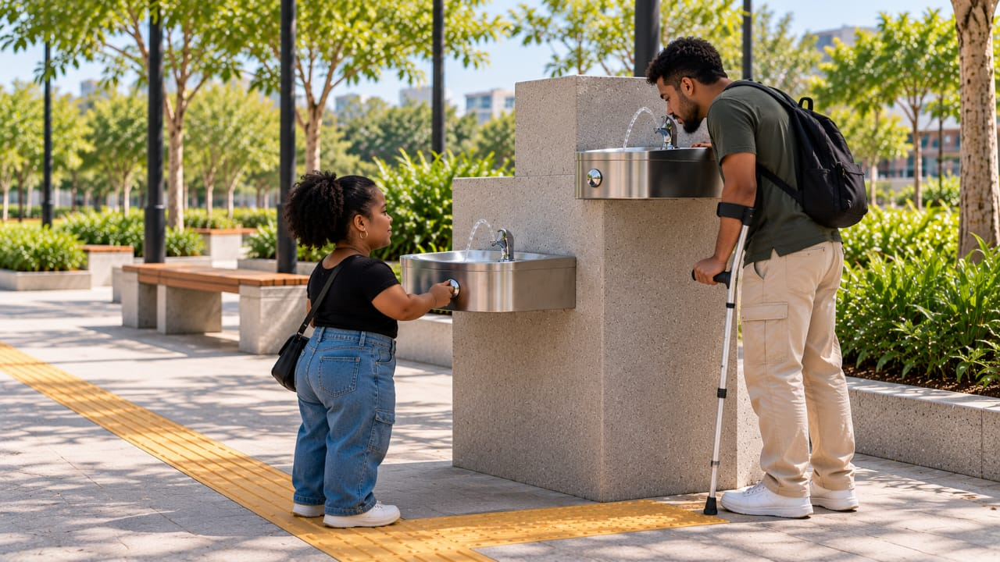

01
Bebedouros acessíveis
Bebedouros instalados em alturas inadequadas dificultam o uso por cadeirantes, crianças e pessoas de baixa estatura. A utilização de equipamentos em diferentes alturas favorece o alcance e a aproximação.
Critérios de acessibilidade
- Saída de água dos modelos de bica a 0,90 m de altura.
- Altura livre inferior mínima de 0,73 m.
- Acionamento de fácil alcance e utilização.
- Área livre próxima ao equipamento para aproximação.
- Instalação sem obstruir as rotas acessíveis.